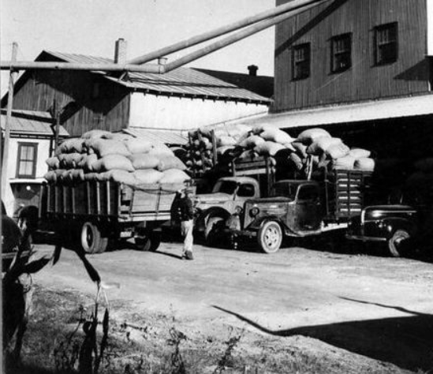
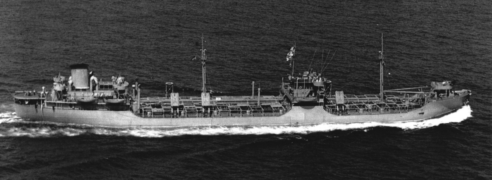

Industrial History Series · Article 01
In 1937, a 23-year-old truck driver sat on a New Jersey wharf and watched cotton bales being loaded by hand, one at a time, onto a coastal steamer. He did the arithmetic. It took almost twenty years and one of the largest bets in American business history to act on what he saw. On April 26, 1956, Malcom McLean sailed fifty-eight aluminium boxes on a converted oil tanker from Newark to Houston and quietly ended the age of break-bulk shipping. The container he invented now carries roughly 90 percent of everything the world trades.
Late autumn, 1937. A wharf on the New Jersey side of the Hudson. The cotton had come up from the Carolinas — five hundred miles of two-lane road through the slow climb into the industrial north — and now it was waiting to go on board a coastal steamer bound for the New England mills.
It would wait a while.
In the cab of the truck that had brought it, a 23-year-old man sat and watched. He had a long, thin face, the kind of physical economy that suggested no part of him had been spared work, and the patient, calculating manner of someone who had taught himself everything he knew by paying close attention to other people doing things wrong. His name was Malcom Purcell McLean. He had been born in 1913 in Maxton, North Carolina, a small cotton town near the South Carolina line, the son of a family that did not have college money and had instead helped him buy a used truck.
He was watching the stevedores work.
The men on the dock loaded bales the way bales had always been loaded: hooks, ropes, sweat, and the patient rhythm of a trade older than the Republic. One bale at a time. Hand to dock. Dock to ship. Hold to hold. The sun moved across the water. The men did not hurry. There was no reason to hurry, in their view, because hurry was not how the work was done. It had not been how the work was done in 1880, when their grandfathers had learned it. It would not be how the work was done in 1950, when their sons would learn it.
McLean did arithmetic in his head.
Hours sitting at the pier were hours his truck was not on the road earning. Bales lifted by hand were bales that should have been lifted by a system. Every minute the cargo was waiting, someone was paying for that waiting — the shipper, the steamship line, the manufacturer at the other end — and the cost was being absorbed into the price of cotton, the price of cloth, the price of the coat a man would wear in Boston that winter without any idea that part of what he had paid for was the time a stevedore on a New Jersey pier had spent walking from one end of a deck to the other holding a hook.
He sat in the cab and watched and thought.
This was, he would later tell the story for the rest of his life, the moment the idea was born. The scholarship is more careful. The economic historian Marc Levinson, whose 2006 book The Box remains the definitive account of containerised shipping, treats the single-afternoon epiphany as part of McLean’s later self-narrative — a compression of years of frustration into one cinematic scene. The general fact is well-documented: McLean drove cotton to the New Jersey docks in the late 1930s and was visibly frustrated by what he saw. Whether the system that would, two decades later, remake global trade arrived in his mind that exact afternoon, or accumulated across a hundred such afternoons, is finally a question of how a story gets told.
What is not in dispute is that the math, however many afternoons it took, never left him.
The Trucker Who Saw Through Trucks
The boy from Maxton had built the company in the worst possible decade for it.
He had finished high school in 1931, at the bottom of the Depression, and had used what little money the family could spare to start a gas station. The gas station became a small egg business. The egg business became, in 1934, a trucking concern with one vehicle and one driver, who was Malcom McLean. By 1945, McLean Trucking operated 162 trucks. By the early 1950s it was one of the largest trucking firms in the United States.

Inside the company, the obsession was cost. McLean filed cost-reduction plans with the Interstate Commerce Commission and used them to win lower regulated rates than his competitors could match. He had the sides of his trailers crenellated to cut wind resistance and improve fuel efficiency — small drag-coefficient gains that compounded across a fleet over years. He thought about routing the way an engineer thinks about a circuit. Every hour on the road was a number. Every hour off the road was a different number, larger and harder to live with.
The strategic frustration, by the early 1950s, was that the road itself was the problem.
The U.S. interstate highway system did not yet exist; it would not be authorised until 1956, the same year the rest of this story turns on. Coastal traffic on the East Coast was clogged. McLean’s drivers spent hours stuck in town centres, idling at stoplights, burning fuel they did not need to burn, hauling freight a fraction faster than the steamships moving the same goods between the same ports. The trucker who had spent fifteen years optimising trucks began to think about optimising the journey itself — and asked the strange question that almost no one in the trucking industry was asking.
What if the trucks went on ships?
Not the goods. The trucks. Or rather: what if the loaded bodies of the trucks could be lifted off their wheels in one city and set on the deck of a vessel and lifted off again, still loaded, in another city, and put on a different set of wheels for the final leg, without anyone touching the cargo inside?
He did not see himself, by the early 1950s, in trucking. He saw himself in transportation. Moving things from origin to destination, by whatever combination of road, rail, and water the math made cheapest. That reframe is the seed of every decision that follows.
The Bet
By 1955 he was 41. The idea was nineteen years old.
The bet, when he made it, was almost incomprehensible to the people closest to him. The Interstate Commerce Commission had ruled that he could not be in both the trucking and shipping businesses at the same time. So he sold McLean Trucking — the company he had built one truck at a time over two decades, the company that bore his name — and used the proceeds to acquire the Pan-Atlantic Steamship Company, a subsidiary of the Waterman Steamship Company of Mobile, Alabama.
The financing was unusual.
No conventional shipping bank would lend against what McLean was proposing. Shipping was an industry that had loaded vessels by hand since the age of sail, and the men who ran it could not see how the loading would be done any other way. They could see what McLean was buying — old hulls, old contracts — but not what he intended to do with them. The loan that would matter was a $22 million credit arranged by a young loan officer at the First National City Bank of New York named Walter Wriston, who would, decades later, run Citibank and become one of the most influential figures in late twentieth-century American finance. Wriston would say afterward, more than once, that McLean was one of the few men he had met in his career who had genuinely changed the world. In 1955, what he saw was a balance sheet, a man, and a calculation that the rest of the industry had not yet been forced to make.
The technical conversion was modest enough to be mistaken for unambitious. McLean took a World War II–era T2 oil tanker, a vessel formerly named the Potrero Hills, and renamed her the SS Ideal-X. He had her retrofitted with a steel deck strong enough to carry standardised aluminium boxes — thirty-five feet long, eight feet wide, eight feet high, sized to match the largest road trailer of the period. The boxes would not be carried inside the ship. They would be set on her deck like crates on a pallet.
The ship was the pallet. The pier was the warehouse. The truck was the forklift.

By April 1956, the Ideal-X was ready.
April 26, 1956
Port Newark, New Jersey. About a hundred invited dignitaries on the wharf. A converted oil tanker tied up alongside, a crane on the dock, fifty-eight aluminium boxes stacked and waiting.
The crane lifted the first container onto the deck. Then the second. Then the third. Loading the ship took less than eight hours. The same volume of cargo, loaded by hand into a conventional break-bulk vessel, would have taken several days. McLean’s later calculation put the loading cost on the Ideal-X at approximately sixteen cents a ton. The conventional break-bulk cost at the same docks at the same time was approximately five dollars and eighty-six cents a ton. The reduction was on the order of thirty-six to one.
The longshoremen on the pier understood what they were watching. They had grown up in a trade their fathers had taught them, in a labour structure that had supported families on the New Jersey waterfront for generations, in a city whose entire economic geometry had been organised around the slow movement of cargo by hand. They were watching that geometry end.
A reporter approached a senior official of the International Longshoremen’s Association named Freddy Fields, who was watching the ship prepare to depart, and asked him what he made of the new container vessel.
Fields gave him the most quoted sentence in the history of containerised shipping.
“I’d like to sink that son of a bitch.”
He was right about his own economic interest. Over the following decades, container shipping would eliminate roughly nine in ten of the waterfront jobs his union represented. The fight that began on that wharf would last thirty years and span both coasts of the country. The men who fought it lost.
The Ideal-X sailed for Houston. McLean did not sail with her — he flew ahead, to be present when she docked five days later. In Houston, the fifty-eight containers were lifted from the deck onto fifty-eight waiting trucks within hours, and the system that did not yet have a name began moving freight on the other end of the country at a speed no one in the room had ever seen.
Almost no one outside the room cared.
The Open Box
For ten years, the answer was: nobody copied it. Most American ports lacked the cranes to handle containers. The major shipping lines watched the experiment from a distance. The longshoremen’s unions struck against containerisation up and down both coasts. Pan-Atlantic, rebranded Sea-Land Service in 1960, grew, but slowly. From 1956 to 1966, the container was widely expected to fail.
The turn came in pieces. In 1966, Sea-Land launched the first transatlantic container service to Rotterdam, Bremen, and Grangemouth. In 1967, the United States military invited Sea-Land to handle logistics for the war in Vietnam — a contract that produced something close to forty per cent of the company’s revenue by 1969 and forced the rest of the global shipping industry, finally, to take the box seriously. In 1968, the International Organisation for Standardisation issued the dimensional standard that fixed the modern shipping container at twenty feet and forty feet. From that point forward, every port, every ship, every truck, every rail flatcar in the world could begin to be designed around the same box.
The decision that mattered most is the one that gets remembered least.
McLean did not enforce his container patents. As the steel boxes spread, he declined to fight standardisation, declined to extract licensing rents, declined the path that almost any other inventor of the period would have taken. The twenty-foot ISO container became the global standard, in part, because no one was defending ownership of it. The economic reasoning is the platform builder’s reasoning: value is not captured by owning the standard, it is captured by being the largest, fastest, most operationally disciplined player inside the system the standard makes possible. Sea-Land was not the most innovative shipping line that came after McLean. It was the first one. That was enough.

Malcom McLean died on May 25, 2001. On the morning of his funeral, container ships around the world sounded their horns in his honour. He had been retired from the industry for years. Sea-Land had been sold to Maersk in 1999. The container had outlasted the company, and was on its way to outlasting most of the businesses that had grown up around it.
The supply chain that runs the modern world is the supply chain Malcom McLean made invisible. The hours he spent in his truck cab on a Hoboken wharf in 1937, watching cotton bales move one at a time, are the hours that every modern logistics platform — every visibility tool, every freight orchestration system, every piece of software that exists to surface the cost of cargo waiting — was built to eliminate.
The hardware problem is finished. The waiting is not.
That is why the story is still being written, in software now instead of steel.
Sources
- Marc Levinson, The Box: How the Shipping Container Made the World Smaller and the World Economy Bigger (Princeton University Press, 2006; 2nd edition 2016).
- Marc Levinson, “Container Shipping and the Decline of New York, 1955–1975,” Business History Review (2006).
- Containerization and Intermodal Institute archives, Iselin, NJ.
- Port Authority of New York and New Jersey, 70th-anniversary feature on the Ideal-X (April 2026).
- Phillip L. Zweig, Wriston (Crown, 1995).
- What It Means To Be American (Zócalo Public Square / Smithsonian).
- American Heritage, “McLean and the Container” (1995).